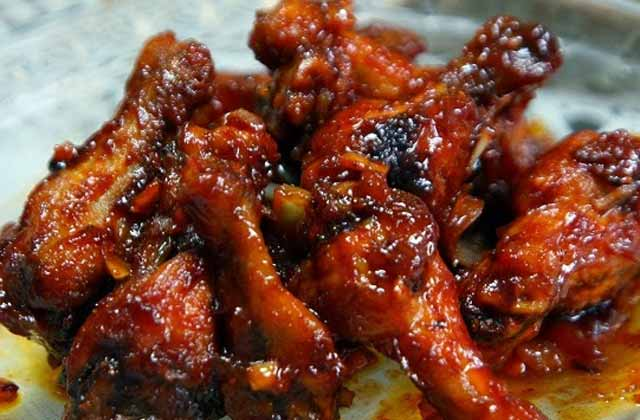

Telur Balado

Bahan-bahan
- 6 Butir telur
- 100 ml air + 1.5 L air
- Kecap manis
- Royko kaldu ayam
- 250 ml minyak untuk menumis
Bumbu halus
- 3 siung bawang putih
- 10 buah cabai merah
- 1 butir kemiri, sangrai
- 1 sdt Royko kaldu ayam
- 6 butir bawang merah
- 5 buah cabai merah kriting
- 2 buah tomat, buang bijinya
- 2 sdm bango kecap manis (boleh yang lain )
Cara membuat
- Haluskan semua bumbu, termasuk Royco Kaldu Ayam dan Bango Kecap Manis dengan blender.
- Panaskan air di panci hingga mendidih. Rebus telur selama 7 menit. Tiriskan lalu rendam dalam air dingin selama 5 menit. Kupas telur yang sudah dingin.
- Panaskan minyak di wajan dengan api sedang. Goreng telur yang sudah dikupas hingga bagian luarnya berwarna kekuningan. Angkat dan tiriskan.
- Tumis bumbu halus dengan 3 sdm minyak hingga harum. Masukkan telur yang sudah digoreng, aduk rata. Tambahkan Bango Kecap Manis dan air, lalu masak hingga bumbu meresap.
- Angkat dan sajikan dengan daun peterseli. Telur balado cocok dijadikan bahan pelengkap untuk nasi uduk, nasi kuning sesuai selera.
Ayam Kecap Sederhana
Bahan-bahan
- 1/2 kg ayam bagian apa saja
- 1/2 sdm kunyit bubuk
- 4 sdm kecap manis
- 1 batang daun bawang iris
- 1 buah tomat potong 4
- Sedikit air
- Minyak untuk menggoreng
Bumbu
- 6 buah bawang merah, iris tipis
- 4 siung bawang putih, iris tipis
- 8 buah cabe rawit merah iris (jika tidak suka pedas, bisa dikurangi)
- 2 cm lengkuas geprek
- 2 cm jahe geprek
- 1 batang sereh
- Secukupnya garam, merica bubuk, kaldu jamur atau penyedap rasa
Cara membuat
- Potong ayam sesuai selera, lalu cuci sampai bersih. Lumuri dengan kunyit bubuk dan garam, diamkan kurang lebih 30 menit
- Panaskan wajan dengan minyak yang cukup untuk menggoreng. Goreng ayam hingga matang, namun jangan terlalu kering
- Tumis bawang merah dan bawang putih sampai harum, lalu tambahkan sereh, jahe dan lengkuas. Aduk sampai rata
- Tambahkan kecap manis, garam, merica bubuk, kaldu bubuk dan sedikit air, aduk lagi sampai rata
- Masukkan ayam yang telah digoreng, lalu masak hingga kuah mengental. Lalu tambahkan cabe rawit, daun bawang dan tomat
- Koreksi rasa, apabila dirasa sudah pas, angkat dan sajikan